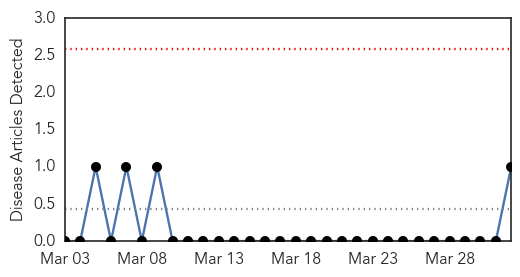
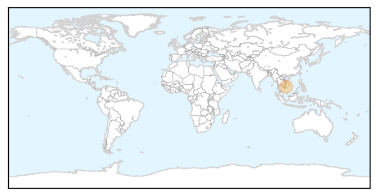
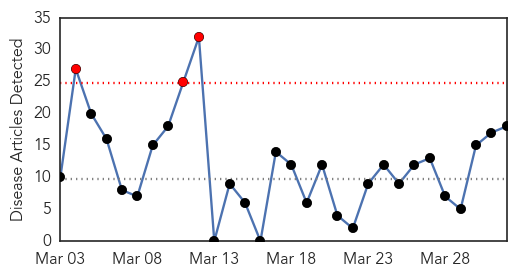

Mumps
30-Day Web Trend
0 alerts, 0 warnings

30-Day Twitter Trend
0 alerts, 0 warnings

Article Locations
Article Confidences

Top Articles:
Top Tweets:
-
No tweets found for Apr 01, 2015
Influenza
30-Day Web Trend
3 alerts, 0 warnings

30-Day Twitter Trend
0 alerts, 0 warnings

Article Locations
Article Confidences
Top Articles:
- 0.980
- Dog Flu: Canine Influenza
- 0.975
- Hendra virus: Volunteers recruited to trial treatment in Brisbane
- 0.940
- Five things to know about the bird flu
- 0.935
- New vaccine available as flu season begins 01/04/2015
- 0.910
- Patients urged to book flu jab early
- 0.816
- ‘Polio-like’ strain of enterovirus D68 known for invoking mystery paralysis, Study
- 0.751
- April 1, 2015 Archives
- 0.751
- April 1, 2015 Archives
- 0.751
- March 31, 2015 Archives
- 0.751
- March 31, 2015 Archives
- 0.751
- March 31, 2015 Archives
- 0.751
- March 31, 2015 Archives
- 0.751
- March 31, 2015 Archives
- 0.751
- March 31, 2015 Archives
- 0.695
- 3rd Bird Flu Case Found in Minnesota
- 0.665
- Avian flu strikes Stearns County turkey flock
- 0.622
- Local falcon dies from bird flu
- 0.514
- More avian flu in US birds; Asian H9N2 found in Alaska
Top Tweets:
-
No tweets found for Apr 01, 2015